| desagregacion | clases |
|---|---|
| 3 dígitos | 237 |
| 4 dígitos | 806 |
| 5 dígitos | 1396 |
| 7 dígitos | 1944 |

Ciencia de datos en el INE
Unidad de Gobierno de Datos
Equipo de Ciencia de Datos
Noviembre 2024
Procesamiento de lenguaje natural
Modelos de codificación automática en encuestas de hogares y económicas
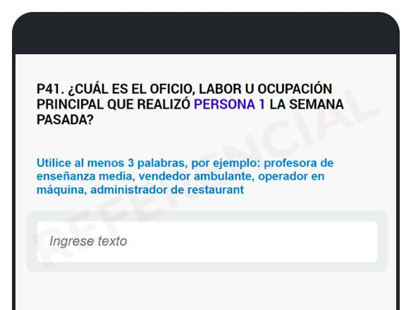

Aplicaciones de codificación automática
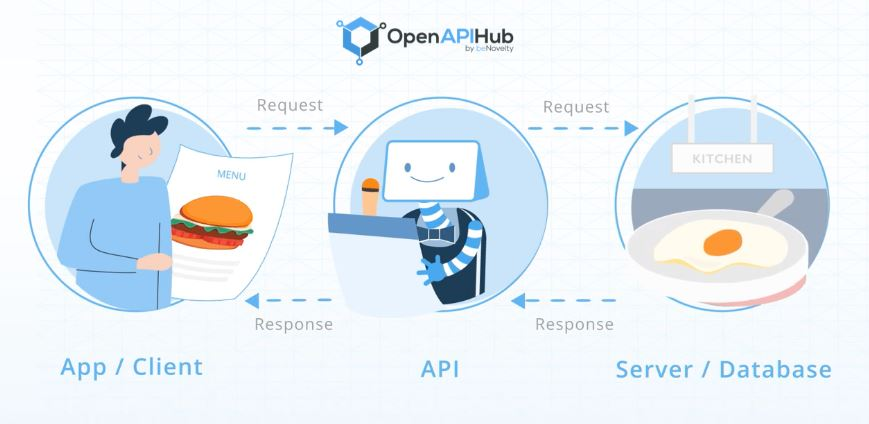
CIUO-08
CAENES
Puedes acceder al tutorial de uso de esta API a través de este enlace
 https://github.com/inesscc/ineclassifiers
https://github.com/inesscc/ineclassifiers
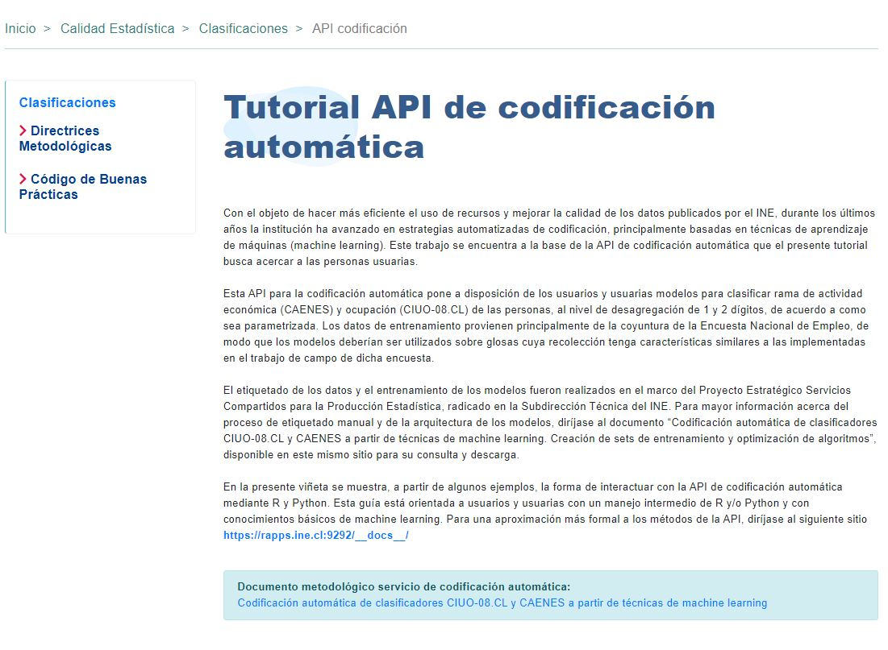 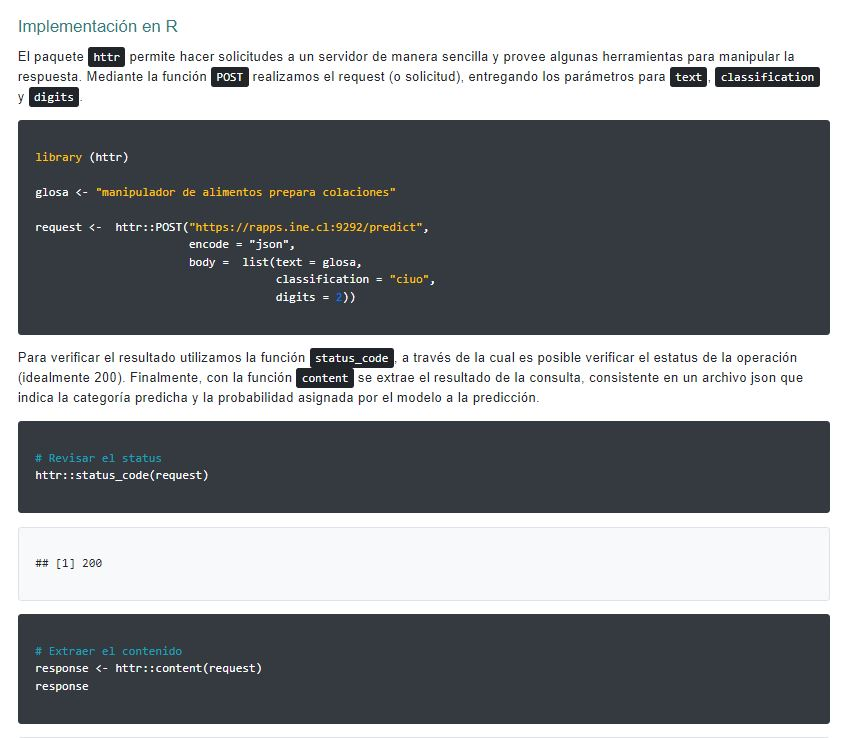
Modelo desarrollado para la revisión de calidad de la Encuesta de Victimización (ENUSC)
Capa de embeddings + LSTM (Long Short-Term Memory)
La aplicación (de acceso interno) puede encontrarse en este link (Swagger)
Iba hablando por celular en la calle. Un tipo me quitó el celular y salió corriendo
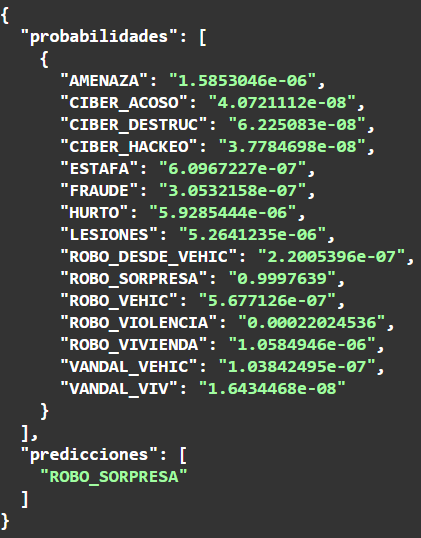
Me pusieron un cuchillo en la espalda y me quitaron el celular
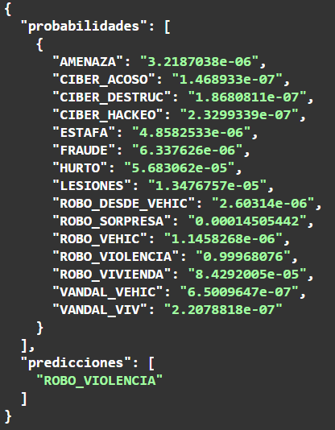
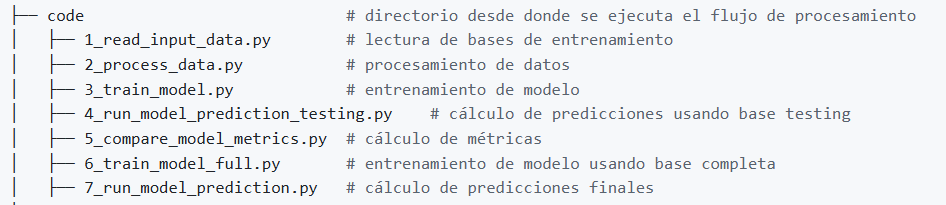
Paquete calidad en R
Es el primer paquete en R desarrollado en el INE y con colaboración de CEPAL
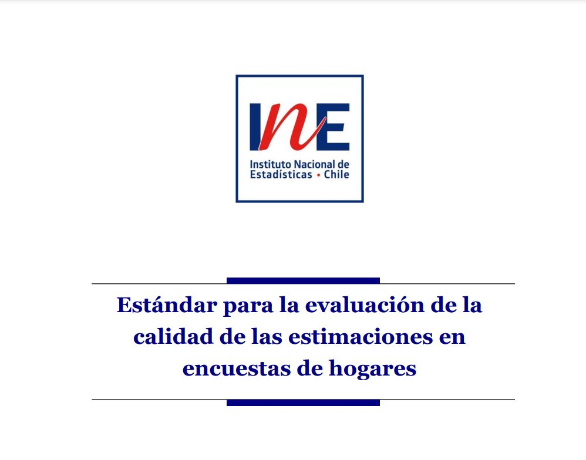 
Tiene 8207 descargas totales hasta ayer
Tiene 322 descargas el último mes
Tiene 100 descargas la última semana
Estratificación con imágenes satelitales
Este ejercicio se desarrolló en el Gran Santiago
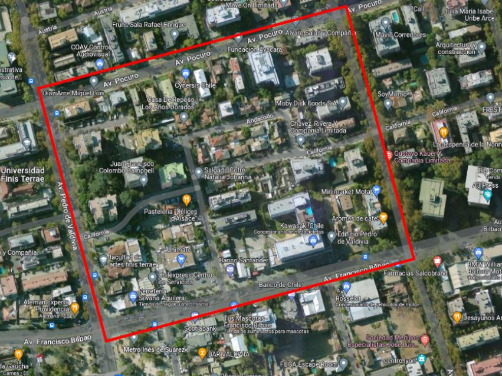
Entrenamos con ~1450 UPMs (e imágenes) con datos de ingreso
Ingreso per cápita de 3 encuestas:
- Encuesta de Presupuestos Familiares
- Piloto CASEN
- Encuesta Suplementaria de Ingresos
Usamos:
Detección de árboles
Detección de piscinas
Intensidad de luces nocturnas
Registros administrativos: cercanía a colegios, estaciones de metro, comisarías, farmacias, etc.
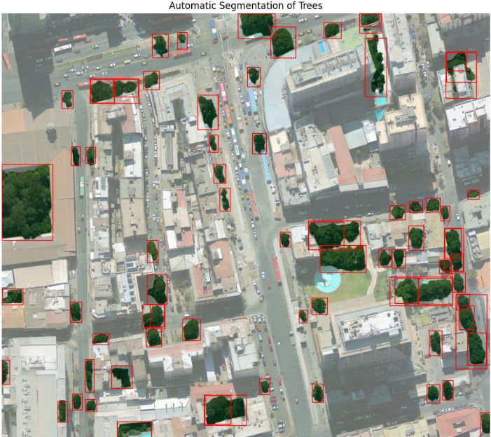

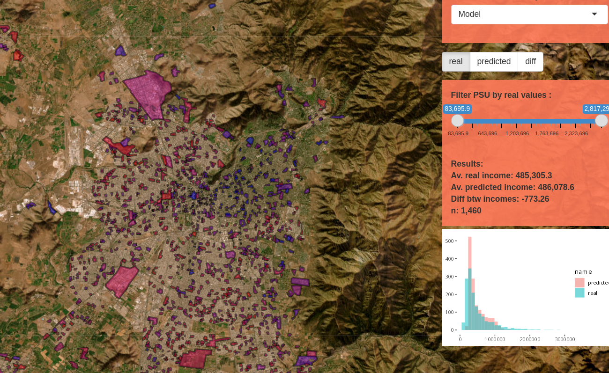
Innominación de documentos con DL
Requerimiento de Transparencia al Sector público de públicar informes de actividades de personal a honorarios

Debe publicarse así:

Etiquetamos internamente ~1000 imágenes
El modelo YOLOv You Only Look Once, es un modelo de detección de objetos proveniente del paquete Ultralytics, diseñado con deep learning
El modelo cuenta con 24 capas convolucionales y 2 capas de conexión completa
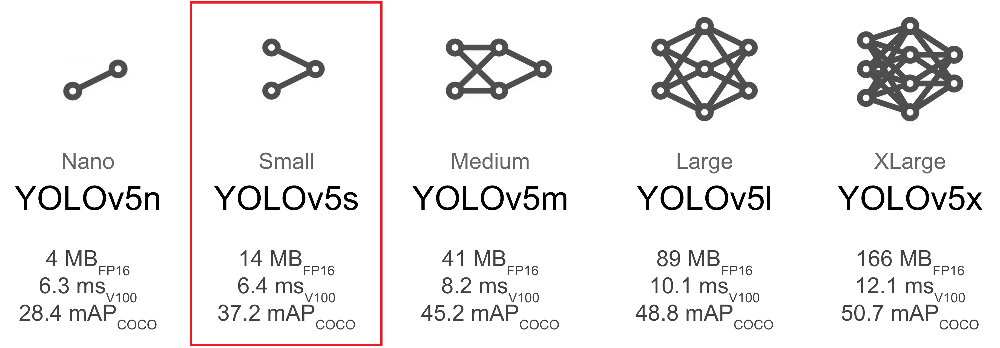
Detección de dobles marcas en SIMCE
Esta es una colaboración del INE a la Agencia de Calidad de la Educación y el Laboratorio de Gobierno
Objetivo: generar un modelo que detecte las dobles marcas en cuestionarios SIMCE

El simce corrobora manualmente todo lo que registra el OCR
El OCR detecta todo lo que tiene 2 marcas


El SIMCE se revisa por completo por personas, que corroboran lo que registra el OCR
El OCR reacciona ante estímulos mínimos como doble marca
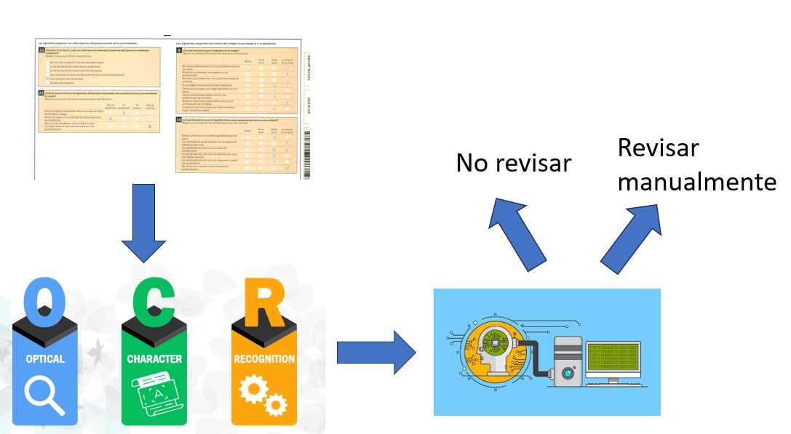
RRAA: tasa rotación laboral
Caso de uso del lago de datos
Presentado en World Data Forum
Procesamiento de más de ~600 millones de filas

¿Dónde está el Censo?
Requerimiento del equipo de Censo de Población y Vivienda 2024
Désarrollo ágil: ~2 meses
Alta complejidad por la alta concurrencia y necesidad de actualización rápida por contingencias en el terreno


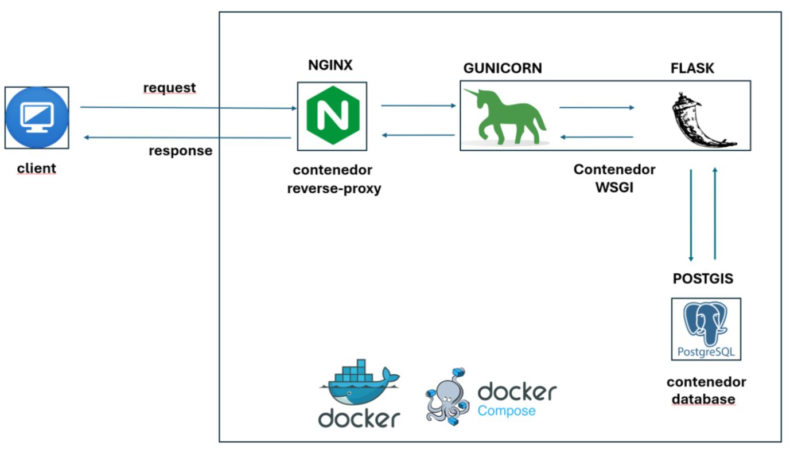
Propuesta arquitectura para una oficina estadística


Ciencia de datos en el INE
Unidad de Gobierno de Datos
Equipo de Ciencia de Datos
Noviembre 2024